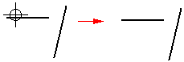

Extend To Next command
Extend To Next command
Extends one or more open elements until they intersect with the nearest element or the element you select in the active window.
The extension direction is determined by where you select the element to extend. For example, if you select a horizontal line to the right of its midpoint, the line extends to the right.

If there is no possible intersection between the element you want to extend and any other element in the view, the command does not extend the element. For example, if you select a horizontal line to the left of its midpoint, and there is no intersecting element on the left, the command does not extend the element.

If the element you want to extend to is not the nearest element, you can specify the element to which you want to extend by holding the Ctrl key, and selecting the element first. For example, if you want to extend the horizontal line (A) to the angular line (B), hold the Ctrl key, and select line (B). Release the Ctrl key, and then select line (A).